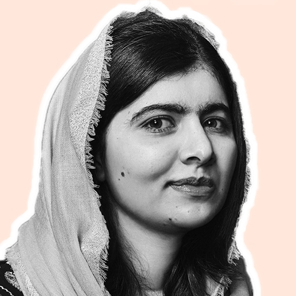
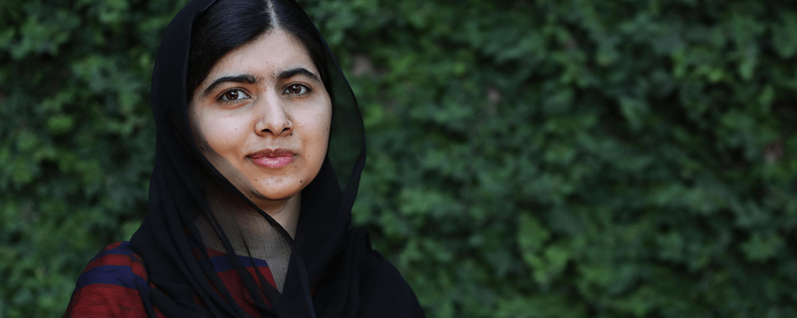

Uma criança, um professor, um livro, uma caneta podem mudar o mundo.

Mais jovem vencedora do Prêmio Nobel da Paz, símbolo da luta pelo direito à educação das meninas, sobrevivente da violência extremista do Talibã, feminista. São muitos os apostos que podem definir Malala Yousafzai, que saltou aos olhos do mundo após ser baleada quando voltava para casa em um ônibus escolar, desafiando os talibãs locais que impedem as jovens de frequentar a escola.
Educação é educação. Deveríamos aprender tudo e então escolher qual caminho seguir. Educação não é oriental nem ocidental, é humana.
História de Malala
Malala Yousafzai é uma ativista paquistanesa internacionalmente conhecida por defender o direito das mulheres de estudarem. Ela ganhou notoriedade por ter defendido essa causa no Vale de Swat, região dominada pelo Talibã. Em 2012, sobreviveu a um atentado promovido por essa organização fundamentalista, e atualmente vive na Inglaterra.

Ainda em sua infância, Malala teve acesso à educação, e isso se deu por influência de seu pai, que, como
vimos, era um educador e dono de escolas. Foi por meio da educação que Malala conseguiu se tornar
fluente em
três idiomas, e logo ela demonstrou ser uma estudante muito dedicada, sempre procurando ser a melhor da
turma.